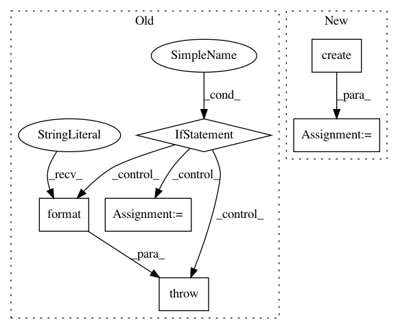

dbf79e6810dff514d1b14acc36250b8859b0e162,src/python/pants/backend/jvm/tasks/junit_run.py,JUnitRun,_isolation,#JUnitRun#Any#,527
Before Change
options = self.get_options()
if options.coverage or options.is_flagged("coverage_open"):
coverage_processor = options.coverage_processor
if coverage_processor == "cobertura":
settings = CoberturaTaskSettings.from_task(self, workdir=output_dir)
coverage = Cobertura(settings)
else:
raise TaskError("unknown coverage processor {0}".format(coverage_processor))
self.context.release_lock()
if coverage:
coverage.instrument(targets=all_targets,
compute_junit_classpath=lambda: self.classpath(all_targets),
After Change
safe_mkdir(output_dir, clean=False)
if self._html_report:
junit_html_report = JUnitHtmlReport.create(output_dir, self.context.log)
else:
junit_html_report = NoJunitHtmlReport()
if self.get_options().coverage or self.get_options().is_flagged("coverage_open"):
In pattern: SUPERPATTERN
Frequency: 3
Non-data size: 6
Instances
Project Name: pantsbuild/pants
Commit Name: dbf79e6810dff514d1b14acc36250b8859b0e162
Time: 2017-08-01
Author: john.sirois@gmail.com
File Name: src/python/pants/backend/jvm/tasks/junit_run.py
Class Name: JUnitRun
Method Name: _isolation
Project Name: google/deepvariant
Commit Name: 4d934160aa7f4f9f1d5cdea7cd0e66cfc3d43d05
Time: 2018-04-29
Author: mdepristo@google.com
File Name: third_party/nucleus/io/fasta.py
Class Name: InMemoryRefReader
Method Name: __init__
Project Name: google/nucleus
Commit Name: 73ec9752604a0a0210fafa0722ca355629648502
Time: 2018-04-23
Author: mdepristo@google.com
File Name: nucleus/io/fasta.py
Class Name: InMemoryRefReader
Method Name: __init__